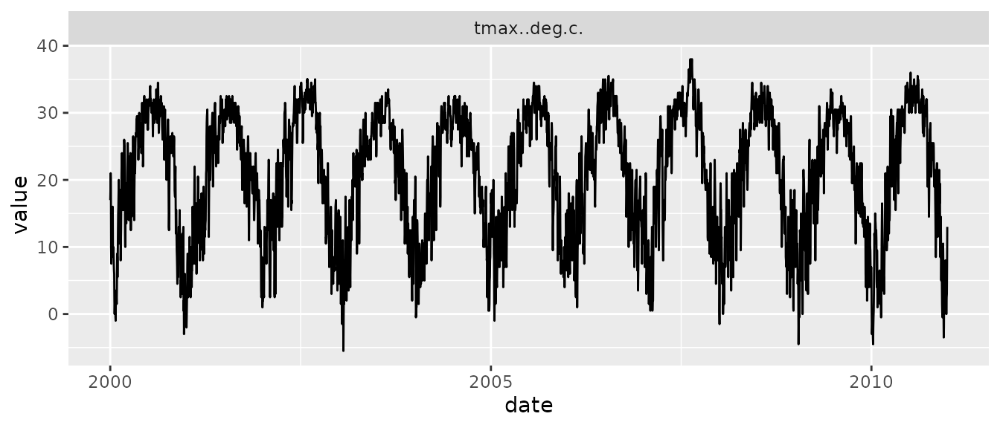
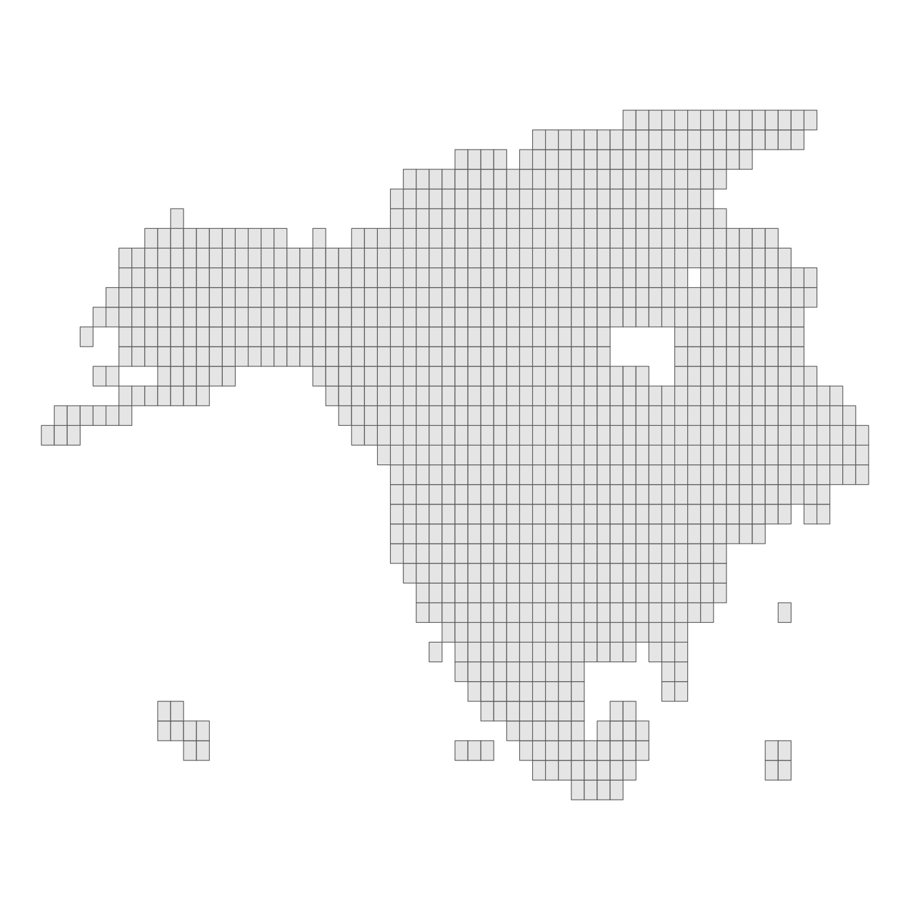
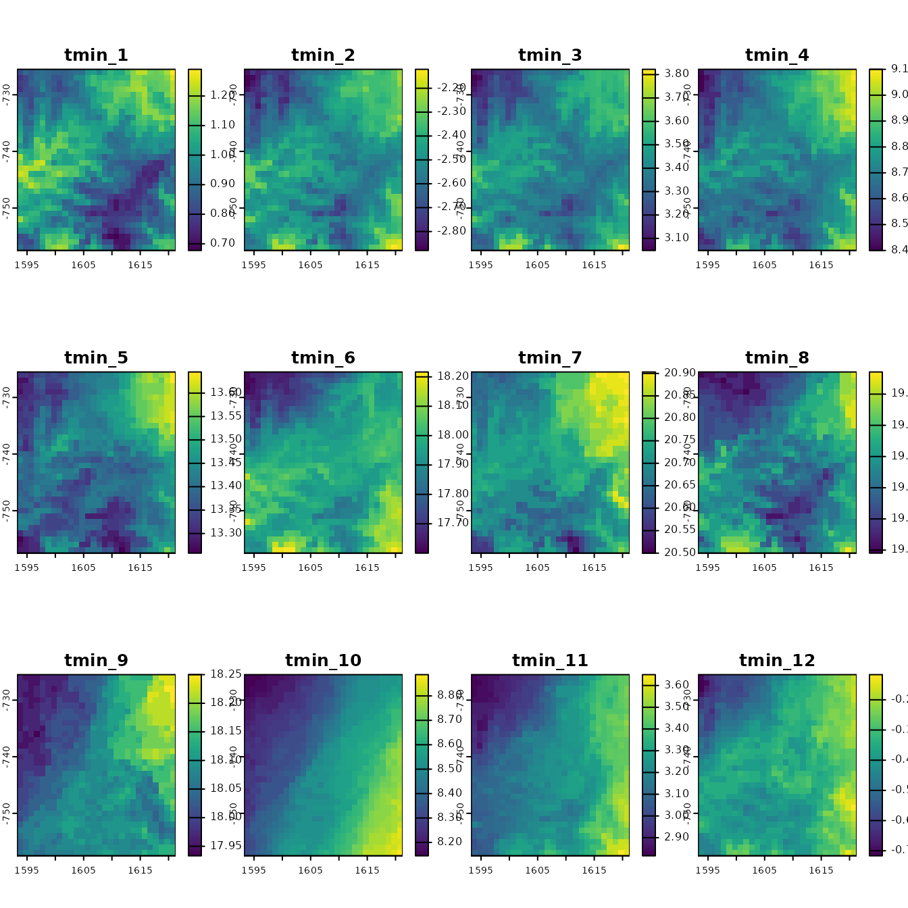
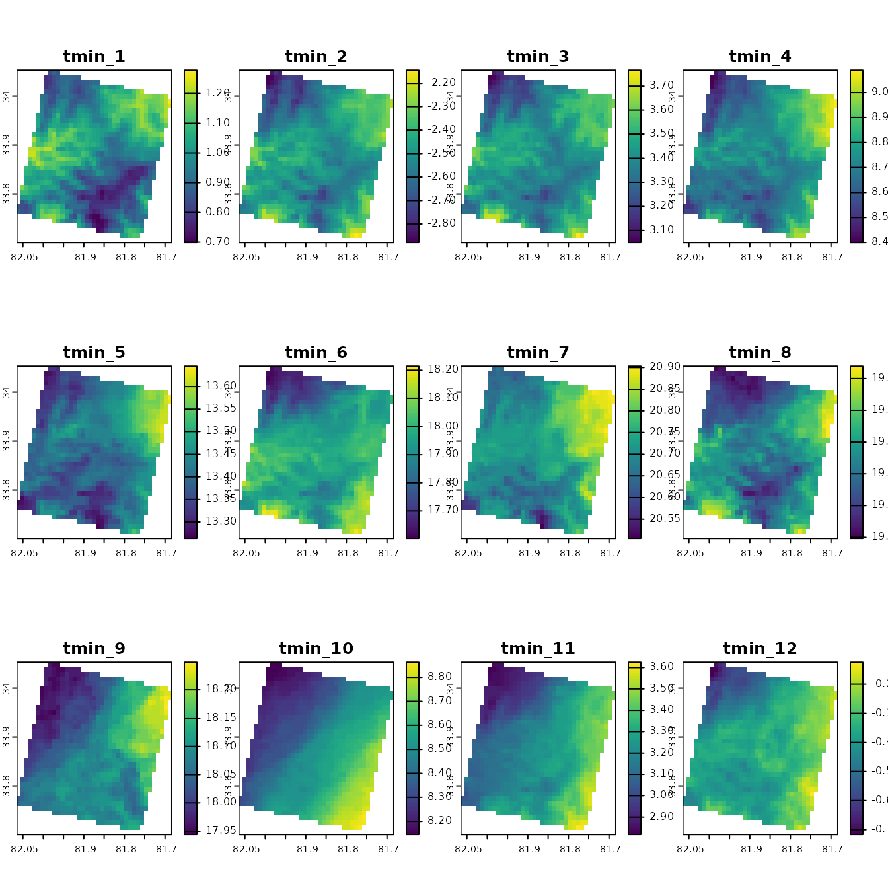

daymetr functionality
Koen Hufkens
2025-03-29
Source:vignettes/daymetr-vignette.Rmd
daymetr-vignette.RmdA programmatic interface to the Daymet web services. Allows for easy downloads of Daymet climate data directly to your R workspace or your computer. Routines for both single pixel data downloads and gridded (netCDF) data are provided. Below you find a number of worked example on mostly smaller datasets to illustrate the utility of the package.
Downloading single pixel data
A common application of daymet data is the extraction of local climate data, at a given location. This data will be extracted from a pixel within the gridded daymet dataset corresponding to a location provided in latitude / longitude format. You can download a dataset for a single location using the following format:
df <- download_daymet(
site = "Oak Ridge National Laboratories",
lat = 36.0133,
lon = -84.2625,
start = 2000,
end = 2010,
internal = TRUE,
simplify = TRUE # return tidy data !!
) With the internal parameter flag set to TRUE the data will be exported as a nested list to your terminal or a variable if assigned. If this parameter is set to FALSE the data will be written to a file on disk in your current working directory (i.e. getwd()). If you want to change the location where files are written to disk use the path parameter. For a full list of parameters see the table below.
There also is a batch mode which uses similar parameters but you provide a comma separated file with site names and latitude longitude which are sequentially downloaded. The format of the comma separated file is as such: site name, latitude, longitude. This function is helpful when downloading large number of locations. Once more if the internal flag is set to true the data will be read in as a nested list of lists.
# code is not run
download_daymet_batch(
file_location = 'my_sites.csv',
start = 1980,
end = 2010,
internal = TRUE
)| Parameter | Description |
|---|---|
| location | vector with a point location c(lat,lon) or top left / bottom right pair c(lat,lon,lat,lon) |
| tiles | vector with tile numbers if location point or top left / bottom right pair is not provided |
| start | start year of the time series (data start in 1980) |
| end | end year of the time series (current year - 2 years / for safety, tweak this check to reflect the currently available data) |
| param | climate variable you want to download vapour pressure (vp), minimum and maximum temperature (tmin,tmax), snow water equivalent (swe), solar radiation (srad), precipitation (prcp) , day length (dayl). The default setting is ALL, this will download all the previously mentioned climate variables. |
If only the first set of coordinates is provided the tile in which these reside is downloaded. If your region of interest falls outside the scope of the DAYMET data coverage a warning is issued. If both top left and bottom right coordinates are provided all tiles covering the region of interst are downloaded. I would caution against downloading too much data, as file sizes do add up. So be careful how you specify your region of interest.
Data downloaded into the workspace, e.g. the df data frame in the above example, resides in a nested list. In addition to the climate data this list includes various meta-data parameters relevant to the query made, and at times helpful in subsequent analysis.
str(df)
#> tibble [28,105 × 9] (S3: tbl_df/tbl/data.frame)
#> $ site : chr [1:28105] "tmp" "tmp" "tmp" "tmp" ...
#> $ tile : num [1:28105] 11388 11388 11388 11388 11388 ...
#> $ latitude : num [1:28105] 36 36 36 36 36 ...
#> $ longitude : num [1:28105] -84.3 -84.3 -84.3 -84.3 -84.3 ...
#> $ altitude : num [1:28105] 279 279 279 279 279 279 279 279 279 279 ...
#> $ year : num [1:28105] 2000 2000 2000 2000 2000 2000 2000 2000 2000 2000 ...
#> $ yday : num [1:28105] 1 2 3 4 5 6 7 8 9 10 ...
#> $ measurement: chr [1:28105] "dayl..s." "dayl..s." "dayl..s." "dayl..s." ...
#> $ value : num [1:28105] 34560 34560 34560 34560 34560 ...The package maintains the original data header names in order to provide a transparent way of dealing with both data downloaded through daymetr or directly from the Daymet website. You can access the climate data using the df$data sub-list. An example of a plot of 10 years of maximum temperature values is provided below.
# simple graph of Daymet data
df %>%
mutate(date = as.Date(paste(year, yday, sep = "-"), "%Y-%j")) %>%
filter(measurement == "tmax..deg.c.") %>%
ggplot() +
geom_line(aes(x = date, y = value)) +
facet_wrap(~ measurement, ncol = 2)
You can further summarize the data frame by year / month or day using either the by(), aggregate() or tidyverse based mutate() or summarize() operations. The code below (not run) uses the tidyverse (ddplyr) syntax to calculate daily mean temperature values from the minimum and maximum values provided by Daymet.
Gridded data downloads
For gridded data use either download_daymet_tiles() for individual tiles or download_daymet_ncss() for a netCDF subset which is not bound by tile limits (but restricted to a 6GB query size). Due to the (default) larger size of tiled data I’ll demonstrate the use of the gridded data with a smaller dataset of monthly averaged data subset for a small (sub-tile sized) region. The below queries illustrate a variety of ways on how to download tile based data and subsets of the available data. You can query data based upon tile number, or a geographic location and required climate variables. A full description of the function parameter is provided in the table below.
| Parameter | Description |
|---|---|
| location | bounding box extent defined as top left / bottom right pair c(lat,lon,lat,lon) |
| start | start year of the time series (data start in 1980) |
| end | end year of the time series (current year - 2 years / for safety, tweak this check to reflect the currently available data) |
| frequency | what temporal time step to use (daily, monthly or annual) only for NCSS subsets |
| path | location where to store the downloaded gridded data |
| silent | suppress download progress |
| param | climate variable you want to download vapour pressure (vp), minimum and maximum temperature (tmin,tmax), snow water equivalent (swe), solar radiation (srad), precipitation (prcp) , day length (dayl). The default setting is ALL, this will download all the previously mentioned climate variables. |
For the netCDF data subsets keep in mind that the bounding box is defined by the minimum (square) bounding box in a Lambert Conformal Conic (LCC) projection as defined by the provided geographic coordinates. In general the query area will be larger than the requested location. For more information I refer to Daymet documentation (https://daymet.ornl.gov/web_services.html) on the web service.
The daymet package also includes spatial polygon data frame outlining all the tiles in the Daymet repository (tile_outlines). This data can be used to extract all relevant tiles for an analysis by calculating the intersect between a geographic region of interest and this file.
# plot the tile outlines
# roughly painting a picture of North America
p <- ggplot(tile_outlines)+
geom_sf() +
theme_void()
print(p)
Querying tiled data
Below you will find some example of queries to the same tile (11207) using both geographic coordinates as well as the tile number. In the first function call ALL climate parameters are requested, while in the second function call only the minimum temperature (tmin) is queried.
# code not run
# Download tiled data for multiple years (1980 - 2012)
# based upon a geographic location.
download_daymet_tiles(location = c(36.0133,-84.2625),
tiles = NULL,
start = 1980,
end = 2012,
param = "ALL")
# Download tiled data for multiple years (1980 - 2012)
# based upon a tile number (11207) restricted to the
# minimum temperature data only.
download_daymet_tiles(tiles = 11207,
start = 1980,
end = 2012,
param = "tmin")Querying netCDF subset (ncss) data
Queries to the NCSS data follow a similar syntax as those for the tiled data. However, you are restricted to using location based bounding boxes to extract gridded data subsets. In addition to the daily data the ncss subsets also include pre-processed summary values, e.g. mean monthly minimum and maximum temperatures or total monthly precipitation.
# download monthly
download_daymet_ncss(location = c(34, -82, 33.75, -81.75),
start = 1980,
end = 1980,
frequency = "monthly",
param = c("tmin","tmax"),
path = tempdir(),
silent = TRUE)
# convert nc files to geotiff
nc2tif(tempdir())The above figure shows nicely how you can query a small subset of the Daymet data. However, a common climate variable, the mean temperature is not provided. As such you may calculate these values using the daymet_grid_tmean() function. This function calculates the mean temperature for a given tile / or ncss subset provided that matching minimum and maximum netCDF files can be found in the same directory.
# read in the demo data from the package for speed
r <- terra::rast(
system.file(package = "daymetr","extdata/tmin_monavg_1980_ncss.tif")
)
# set the correct projection
r <- terra::project(
r,
"+proj=lcc +lat_1=25 +lat_2=60 +lat_0=42.5 +lon_0=-100 +x_0=0 +y_0=0 +ellps=WGS84 +units=km +no_defs"
)
plot(r)
# reproject to lat lon
r <- terra::project(r, "+init=epsg:4326")
# plot the monthly mean minimum temperature for 1980
plot(r)
Below we search in the temporary directory of R for the downloaded monthly minimum and maximum temperature ncss files for the year 1980 (see paramteres specified) and calculate the mean monthly temperature for this year.
# plot the monthly mean minimum temperature for 1980
r_tmean <- daymet_grid_tmean(
path = system.file(package = "daymetr","extdata"),
product = "monavg",
year = 1980,
internal = TRUE
)I hope the vignette provided you with an overview of the capabilities of the daymetr package. Please report all bugs or feature requests on the project’s github page. If you found the software useful in your work please use the below reference to cite the package.